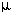

| Symbol | Definition |
|---|---|
| Å | Angstrom (10-10 meters) |
| Bo | Static magnetic field |
| B1 | The radio frequency magnetic field |
| C | Contrast |
| C | Electrical eapacitance |
| COSY | 2-D correlated spectroscopy |
| CW | Continuous wave |
| D | Deuterium |
| D | Diffusion coefficient |
| | Chemical shift |
| | Magnetic field gradient pulse width |
| Magnetic field gradient pulse separation | |
| | Chemical shift |
| E | Energy |
| f | Frequency |
| FID | Free induction decay |
| FT | Fourier transform |
| Gi | Magnetic field gradient in the i direction |
| | Gyromagnetic ratio |
| h | Planck's constant |
| H | Hydrogen |
| IFT | Inverse Fourier transform |
| IM | Imaginary part of a complex number |
| J | Joule |
| J | Spin-spin coupling constant |
| k | Boltzmann constant |
| k | kilo (103) |
| k | Proportionality constant |
| K | Kelvin temperature |
| L | Electrical Inductance |
| m | milli (10-3) |
| M | mega (106) |
|  | micro (10-6) |
| Mo | Equilibrium magnetization |
| MX | X component of magnetization |
| MX' | X' component of magnetization |
| MY | Y component of magnetization |
| MY' | Y' component of magnetization |
| MZ | Z component of magnetization |
| MXY | Transverse component of magnetization |
| MRI | Magnetic resonance imaging |
| | Resonance frequency in Hertz |
| N | Number of averages |
| N+ | Spin population in low energy state |
| N- | Spin population in high energy state |
| NMR | Nuclear magnetic resonance |
| | Resonance frequency in radians per second |
| | Ohm, impedance |
| | 3.14159... |
| | Phase angle |
| ppm | Parts per million |
| R1 | Spin-lattice relaxation rate |
| RE | Real part of a complex number |
| RF | Radio frequency |
| s | Second |
| | Chemical shielding constant |
| SAR | Specific absorption rate |
| Sinc | Sin(x)/x |
| SNR | Signal-to-noise ratio |
| T | Temperature |
| T | Tesla |
| T1 | Spin-lattice relaxation time |
| T2 | Spin-spin relaxation time |
| T2* | T2 star |
| T2inhomo | Inhomogeneous T2 |
| Rotation angle | |
| TE | Echo Time |
| TI | Inversion Time |
| TR | Repetition Time |
| X | X axis in laboratory coordinate system |
| X' | Rotating frame X axis |
| Y | Y axis in laboratory coordinate system |
| Y' | Rotating frame Y axis |
| Z | Z axis in laboratory coordinate system |
| 1-D | One-dimensional |
| 2-D | Two-dimensional |
Copyright © 1997-2017 J.P. Hornak.
All Rights Reserved.